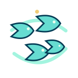

QUATRO GRUPOS

Cardume
Agrupe as 16 palavras. Você tem quatro chances.
EXPEDIÇÃOErros restantes: ● ● ● ●
Selecione quatro palavras relacionadas.

Agrupe as 16 palavras. Você tem quatro chances.
Selecione quatro palavras relacionadas.